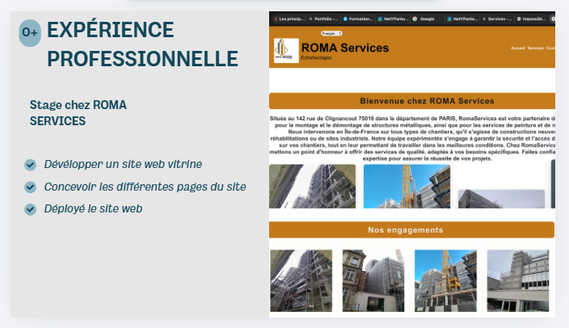
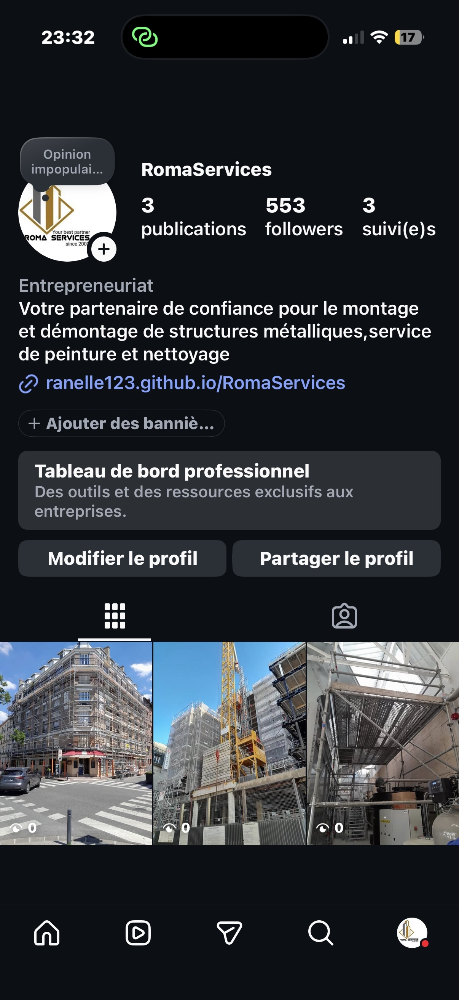

Projet personnel
Présentation du projet
Ce projet personnel est un travail de développement web axé sur l'intégration de fonctionnalités modernes et la communication avec les réseaux sociaux. L'objectif principal est de créer une interface utilisateur agréable, fluide et totalement adaptée aux écrans de téléphones et d'ordinateurs (responsive).
Une partie importante du projet consiste à lier l'application avec la plateforme Instagram afin d'afficher du contenu en temps réel et d'améliorer la visibilité de la solution développée.

Aperçu principal du projet

Maquette de l'intégration Instagram